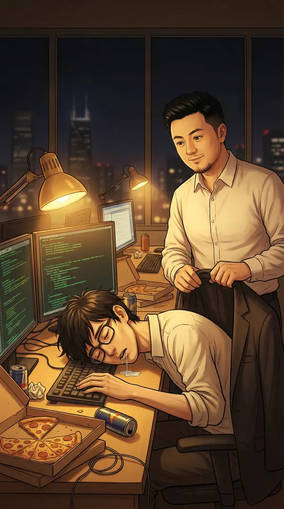
深夜的五道口办公室。"盾甲"上线前三天，整个团队都在通宵改bug。陈磊趴在键盘上睡着了，嘴角挂着口水。
我轻轻把外套披在陈磊身上。这家伙连续熬了三个通宵，比我还拼。
手机突然震了。一个陌生号码，短信只有一行字："学三食堂，周六中午。——你猜我是谁？"
我愣住了。"学三食堂"——上海交大第三食堂。我和张维大学四年吃了上千顿饭的地方。但我现在在北京，而张维……大四突然退学后，就像人间蒸发了。
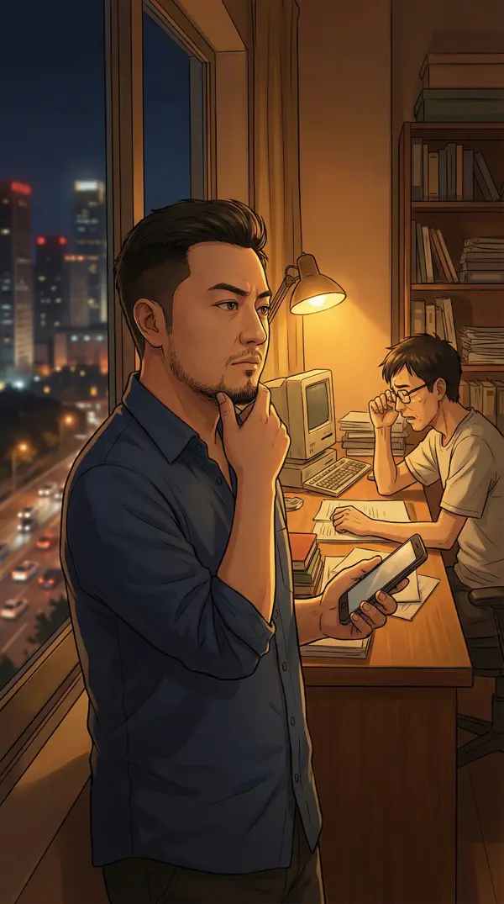
陈磊醒了，迷迷糊糊问："谁发的？"我随口说："一个老同学。"
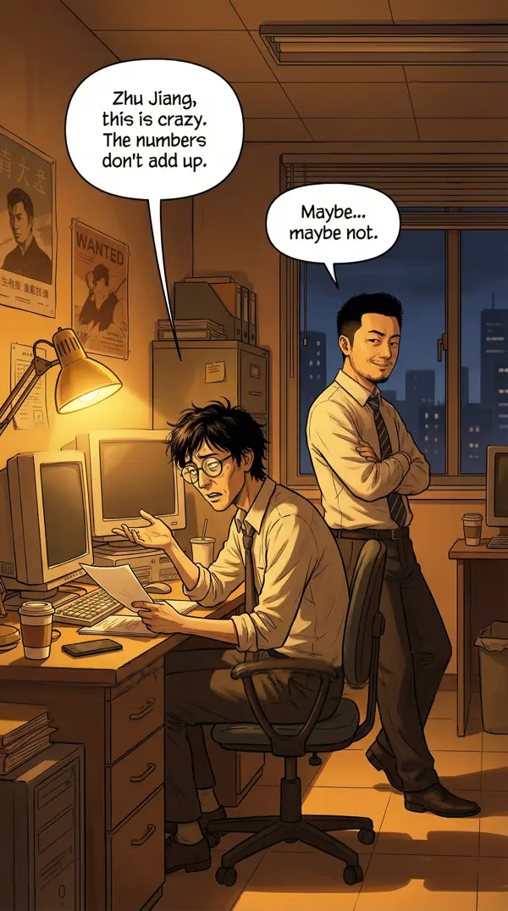
陈磊打了个哈欠："大半夜找你的老同学，不是借钱就是传销。"我苦笑："……某种意义上，你说得还挺对。"
海淀区一家小面馆。不是上海交大，但张维故意选了个一样草根的地方。
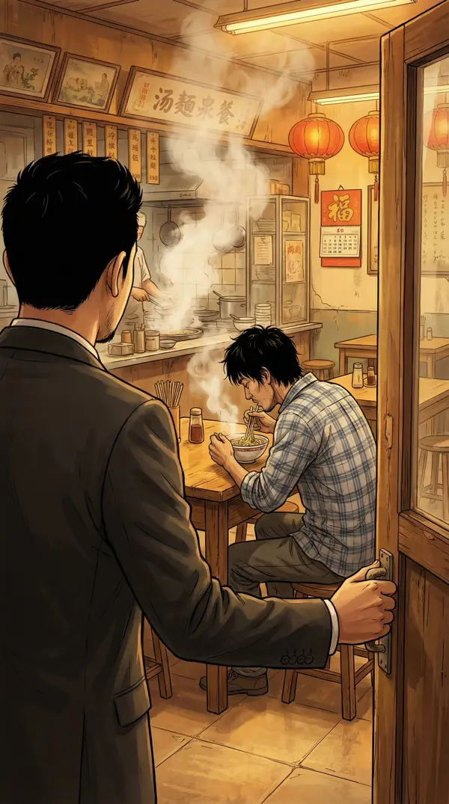
我推开门。温暖的灯光和面汤的香气扑面而来。角落里坐着一个人——
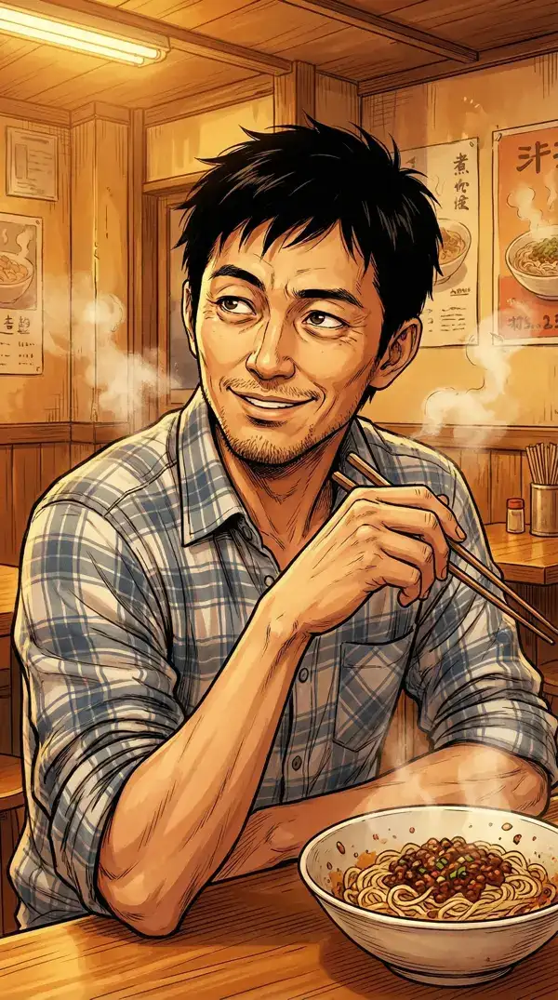
张维。八年没见，但我一眼就认出来了。比大学时瘦了，眼窝深了，下巴蓄了短胡茬。穿一件洗得发白的格子衬衫，袖子卷到小臂。他抬头看到我，笑了。那种带着点痞气的、"我又搞了个大事"的笑。
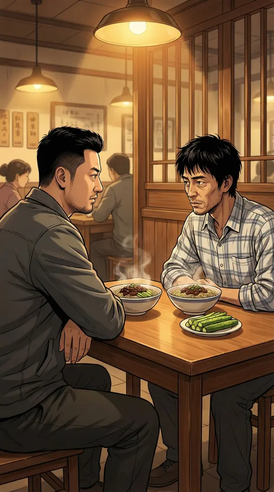
"哥们儿，好久不见。"他给我也点了一碗炸酱面。"你怎么知道我要吃面？""你大学四年在学三食堂只点两样东西——炸酱面和红烧牛肉面。今天这家没牛肉面。""……你的数据收集能力上辈子就这样。"张维差点呛面。
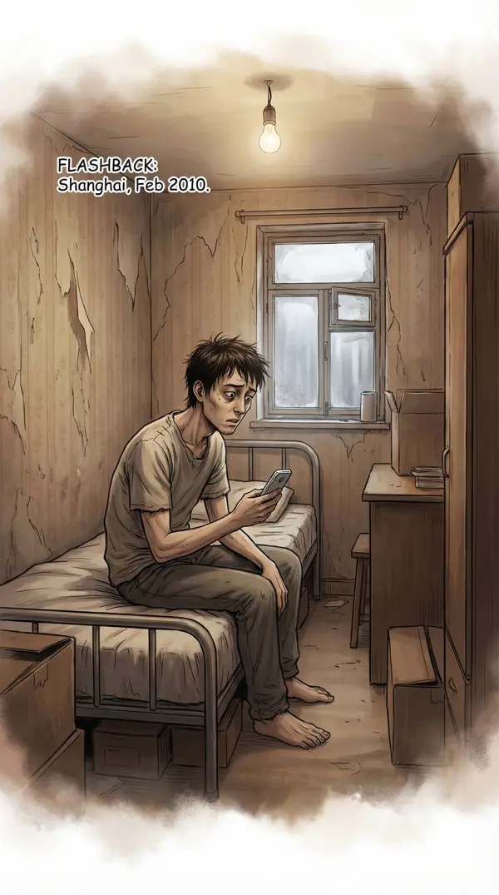
【回忆】张维讲述他的三个月——"2010年2月，我醒来时躺在上海的出租屋里，手里是一部诺基亚6300。第一个月，我以为自己疯了。"
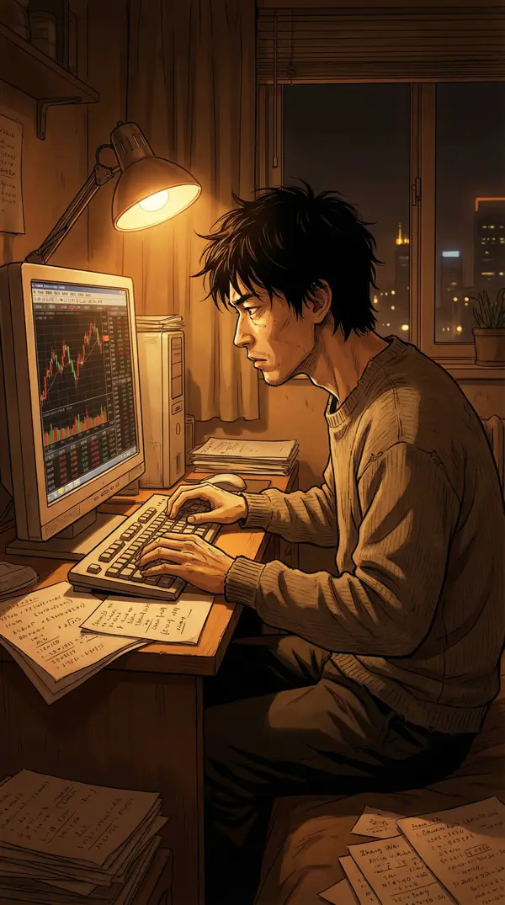
"第二个月我冷静下来了。我是金融+CS双学位，上辈子在华尔街做量化交易。用未来的信息做投资，是最高效的变现方式。"
"第三个月，启明星基金成立了。第一笔钱是炒短线赚的，然后投了12个项目。都是未来十年的独角兽赛道。"
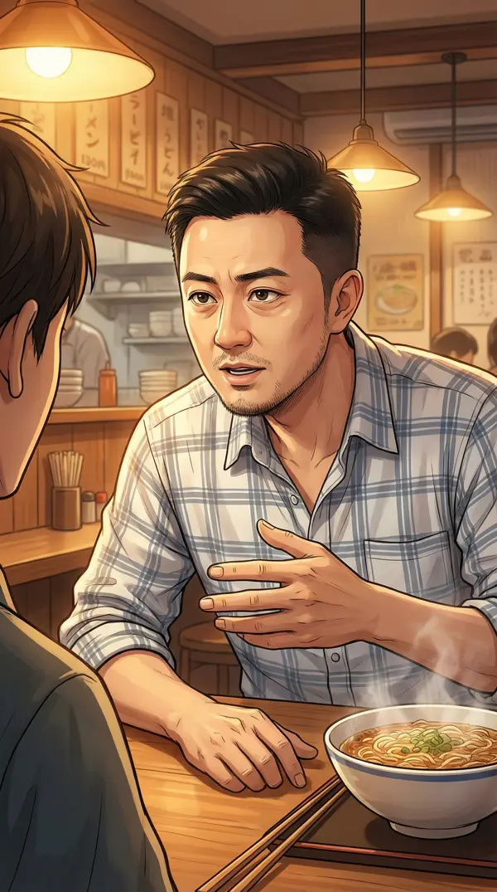
"我知道你想问什么——我为什么没找你。因为我不确定你也回来了。直到上个月，我看到一个叫'朱江'的人在移动安全领域做出了一个不应该2010年存在的东西。"
张维提出合作：把启明星基金的资源和我的技术能力结合，联手打造"穿越者联盟"。
上辈子做投资教会我一件事：越好的offer越要冷静。信任是奢侈品，在穿越者之间更是。我没有接受，也没有拒绝。
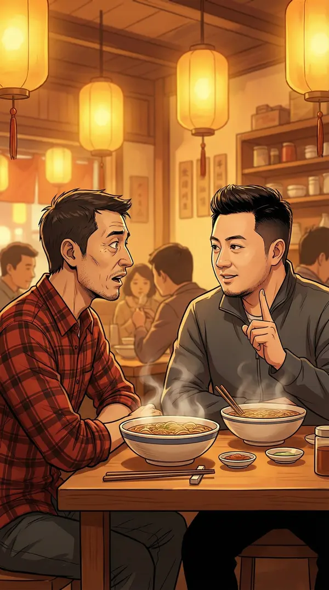
"我提一个交换条件。你公开启明星的完整投资清单，我告诉你一个你不知道的事。"张维眼睛亮了："什么事？""除了我们两个，还有第三个穿越者。"
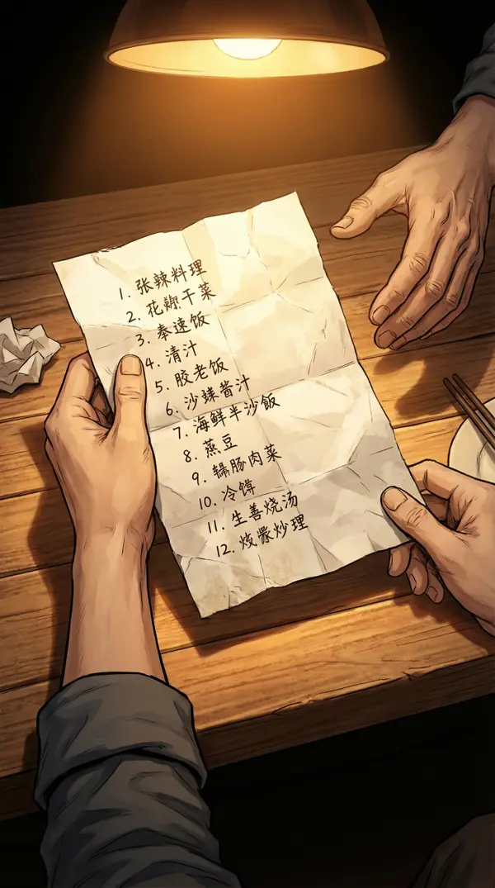
张维同意了。他掏出一张手写的清单——故意不用电子设备。穿越者都明白，2010年的网络对黑客来说不设防。
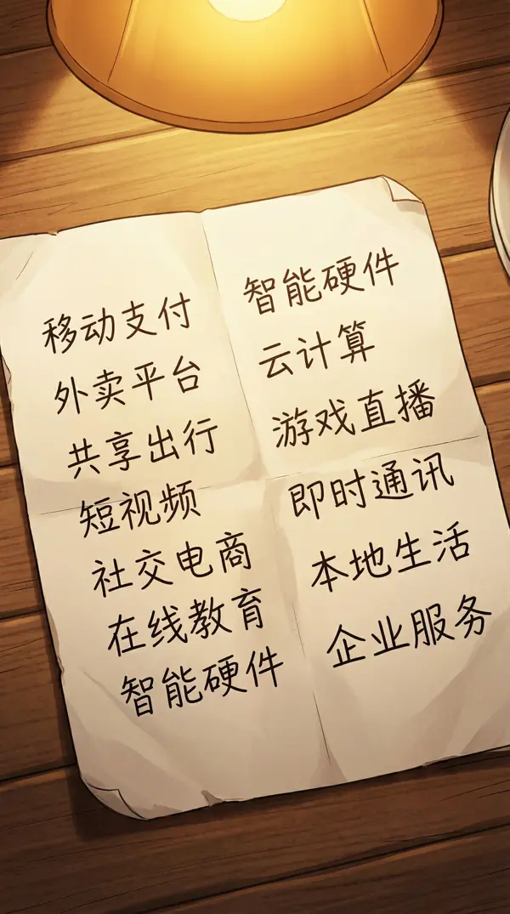
12个项目。每一个我都认得——移动支付、外卖平台、共享出行、短视频……全是未来十年的巨头赛道。
"你选得挺准。""你也知道这些？""知道。但我选了一条更难的路——自己做产品。"
张维看着我，表情变了。"朱江，我佩服你。真的。我只敢投资，你敢创业。但是……有些赛道里，我已经投了竞争对手。如果你做大了，我们有些利益会冲突。我提前告诉你，这是我的诚意。"
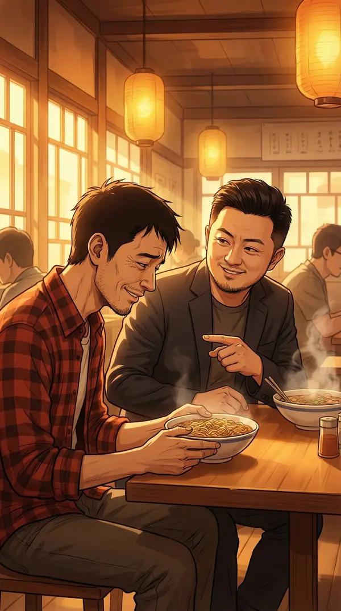
五秒沉默。我指着他碗里的面："你面坨了。"张维低头看了一眼："……比你的长远战略好消化。"两个穿越者在面馆里笑出了声。有些东西，不管隔了多少年，不管经历了什么，都没变。
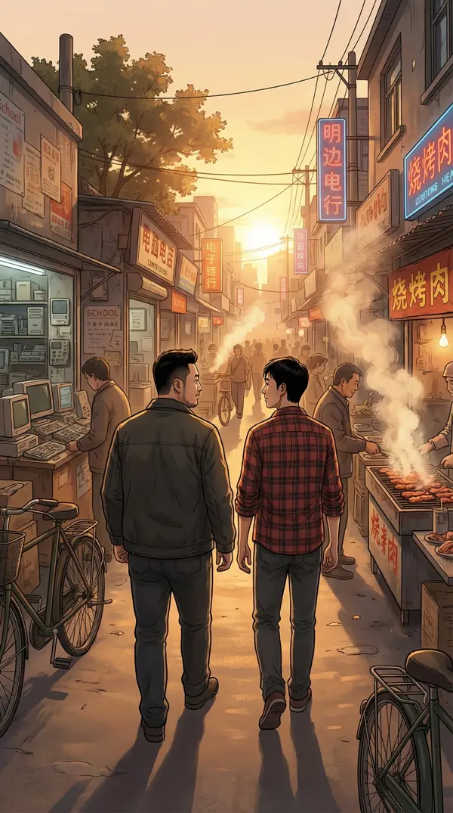
面馆外。2010年的海淀——到处是卖电脑配件的小店和学校围墙外的烤串摊。两个从未来回来的人，走在这条十六年前的街上。
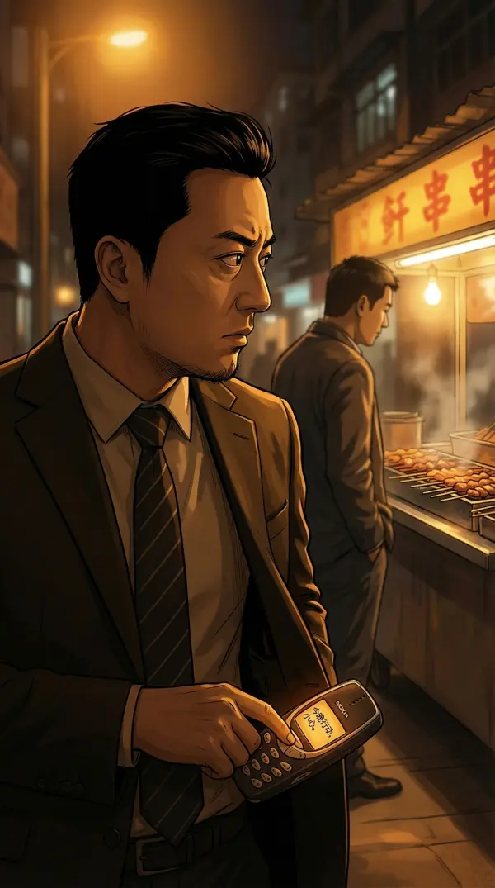
我给林晓蝶发了预设的短信暗号。不管张维说了什么，我需要第二个信息源来交叉验证。
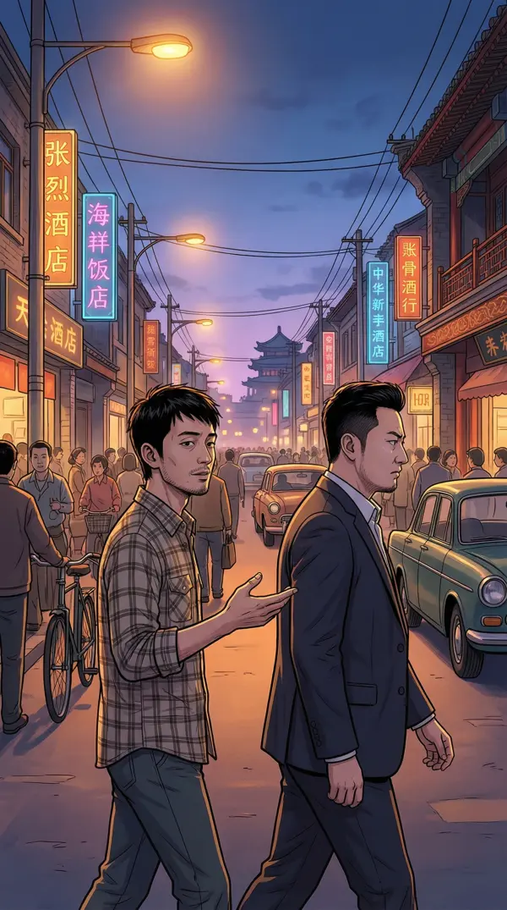
张维随口说了一句："对了，你的'盾甲'下周上线吧？我看到了内测版的数据包。做得不错。"我心跳加速。我没有公开内测数据包。
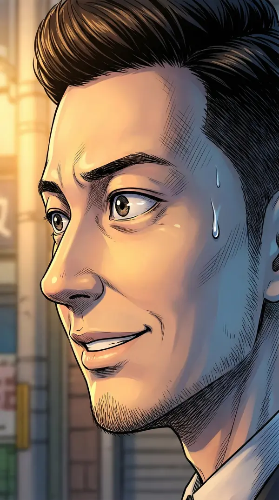
我保持微笑。上辈子做安全时的标准操作——发现老鼠进了仓库，最蠢的做法是把灯打开。你应该在奶酪里放追踪器。
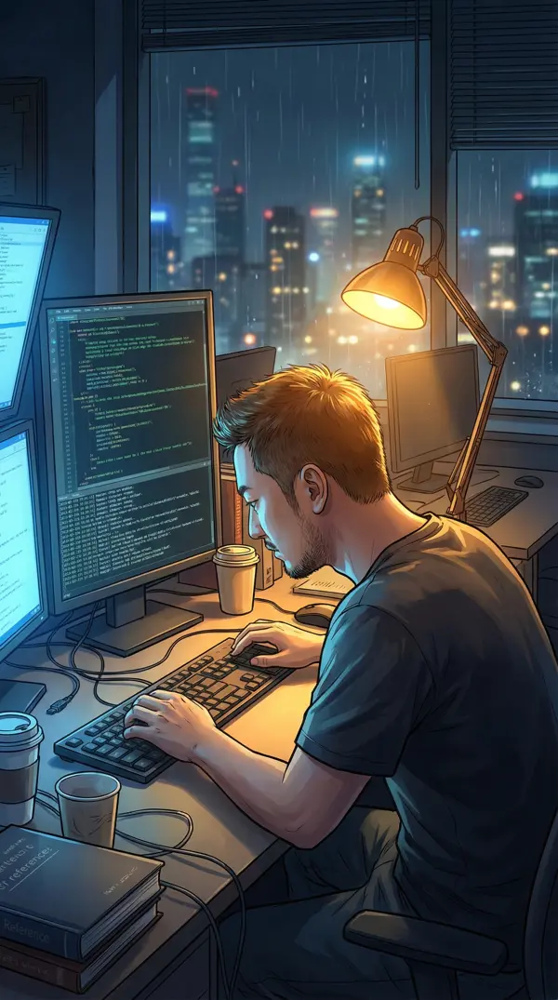
夜里。我回到办公室，没有告诉陈磊张维的事。打开系统日志，开始审计。我需要知道张维是怎么拿到内测数据包的。
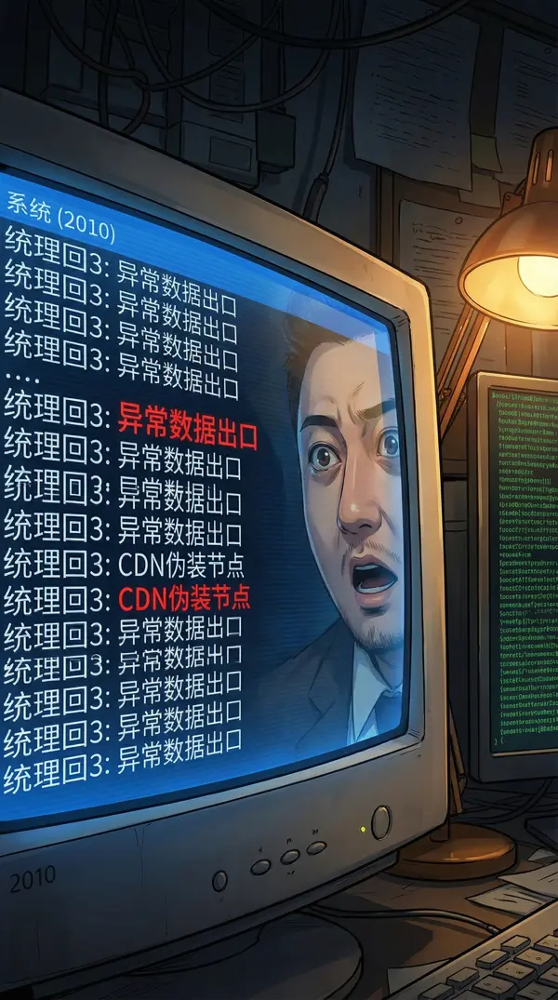
两小时后。一个伪装成CDN节点的异常数据出口。时间戳显示，过去两周内有人持续在镜像"盾甲"的核心代码。手法很专业，绝不是业余人士。
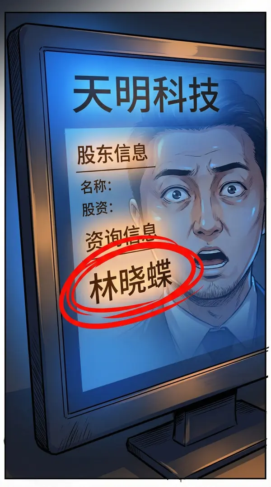
镜像的目标IP指向一家叫"天明科技"的公司。工商登记股东栏里——不是张维。是林晓蝶。"她也在看我的代码？"
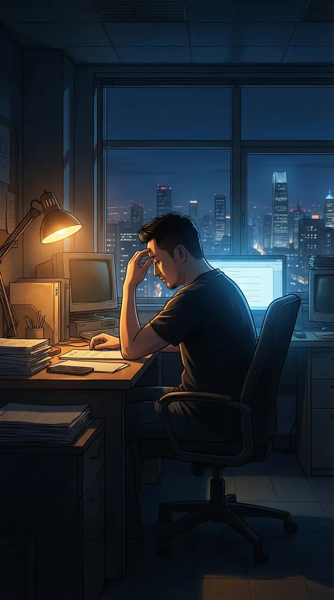
张维说她在做"危险的事"。林晓蝶说张维在做"危险的事"。他们互相指控对方——而两个人都在暗中监视我。这不是两个穿越者之间的博弈。这是一个三角棋局。而我，现在是三个人里信息最少的那个。
张维说她在做"危险的事"。
林晓蝶说张维在做"危险的事"。
他们互相指控对方——
而两个人都在暗中监视我。
这不是两个穿越者之间的博弈。
这是一个三角棋局。
而我，现在是三个人里信息最少的那个。
下章预告：三方猜忌升级。"盾甲"上线和穿越者博弈之间，我必须找到平衡。而启明星基金投资的某个项目——正是"盾甲"最大的竞争对手。
室友之间的友情，还剩下多少是真的？